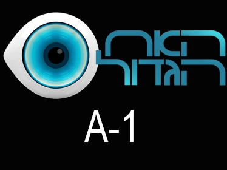
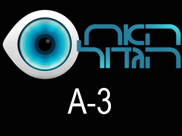

Project Title
Motion Graphics | 2024 | Client Name
Project Overview
Detailed description of the project, challenges faced, solutions implemented, and final results.
My Role
- Motion Graphics Design
- Visual Effects Compositing
- Color Grading
Technologies Used
Process & Results

